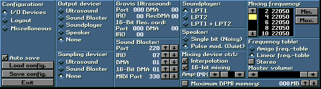
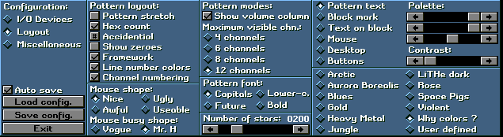
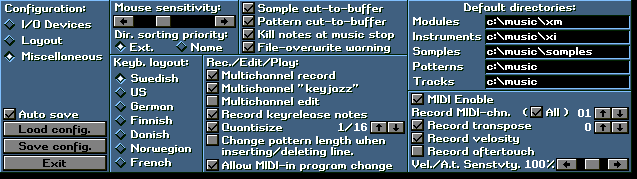

Configuration：
I/O Devices 入出力関係の設定を行います
LayOut 画面の構成に関する設定を行います
Miscellaneous その他いろいろな設定を行います
Ａｕｔｏ ｓａｖｅ
ここにチェックを入れると設定が自動でセーブされます
Ｌｏａｄｃｏｎｆｉｇ．
設定ファイルを読み出します
Ｓａｖｅｃｏｎｆｉｇ．
設定ファイルを書き出します
Ｅｘｉｔ
セットアップを終了します

Ｏｕｔｐｕｔ ｄｅｖｉｃｅ：
出力に使うサウンドカードを選択します
Ｓａｍｐｌｉｎｇ ｄｅｖｉｃｅ：
サンプリングに使うサウンドカードを選択します
Ｇｒａｖｉｓ Ｕｌｔｒａｓｏｕｎｄ：
Gravis Ultrasound(ＧＵＳ)を使う場合の環境変数を入力します
Ｓｏｕｎｄ Ｂｌａｓｔｅｒ：
サウンドブラスターを使う場合の環境変数を入力します。
環境変数はWindows上での設定と合わせればほとんど問題なく動作すると思います
Windows上の設定を見るにはコントロールパネル→システム→デバイスマネージャー→サウンドビデオおよびゲームのコントローラ→プロパティで確認できます
Ｓｏｕｎｄ Ｐｌａｙｅｒ：サウンドプレイヤー（詳細不明）を使う場合の設定を行います
Ｓｐｅａｋｅｒ：
内蔵スピーカー（ＢＥＥＰ音）を使う場合の設定を行います
Ｍｉｘｉｎｇ ｄｅｖｉｃｅ ｃｔｒｌ：
Ｉｎｔｅｒｐｏｌａｔｉｏｎ SoundBlasterやSoundPlayerを使っている場合に音質が悪い場合はこれにチェックを入れると音質が良くなります。ＣＰＵパワーを食いますがよほど古いＰＣではない限りほとんど影響は出ないはずなのでチェックを入れておいたほうが良いでしょう。ＣＰＵは４８６以上が推奨のようです。
１６−ｂｉｔ ｍｉｘｉｎｇ １６BitMixingが可能ならばそれを有効にします。これも一応ＣＰＵパワーを食うようです
Ａｍｐ：
出力を増幅します。
Ｍｉｘｉｎｇ ｆｒｅｑｕｅｎｃｙ：
ミキシングの周波数を設定します。高いほうが音質は良いです。とりあえずＭａｘにしておきましょう
Ｍｉｎ． 値を最小にします
Ｍａｘ． 値を最大にします
ｆｒｅｑｕｅｎｃｙ ｔａｂｌｅ：
周波数テーブルを設定します。Linerにチェックを入れておけばいいでしょう。
切り替えるとポルタメント（エフェクトの一種）の効果の出かたに影響が出る場合があります
Amiga freq-table アミガ形式に設定します
Liner freq-table ライナー形式に設定します
Stereo ステレオでならす場合にチェックします
Master-Volume マスターボリュームを設定します
Maximam DPMI memory
メモリの使用量を設定した値に制限します
画面の構成のセットアップ

Pattern Layout:
Pattern stretch ライン間のスペースの有無の切り替え
Hex count ライン番号の１６進数、１０進数の切り替え
Accidential 半音の表示を＃、♭、のどちらを使うかの切り替え
Show zeroes ボリュームカラムの値が指定されてない場所に０を挿入するかの切り替え
Framework フレームの有無の切り替え
Line number colors ４ラインごとにライン番号の色を反転させるかの切り替え
Channel numbering チャンネルの番号の有無の切り替え
Mouse Shape:
マウスカーソルの形を指定します
Mouse busy shope:
待ち時間の時のマウスカーソルの形を指定します
Pattern modes:
Show volume column
ボリュームカラムを表示するか切り替えます。
Maximum visible chn.: １画面に対してのトラックの最大表示数を切り替えます
Pattern font:
フォントを切り替えます
Number of stars:
メイン画面でAboutを押したときに出てくる星の数を指定します
右側の設定はカラーの設定になります。
その他のセットアップ

Mouse sensitibity:
マウスの感度を設定します
Dir.sorting priority
ファイルの表示の順番を指定します。
Ext. 拡張子順
Name 名前順
Keyb.layout
キーボードのレイアウトを指定します。ＵＳでいいでしょう。
Sample cut-to-buffer カットしたサンプルデータをバッファに蓄えるか指定します
Pattern cut-to-buffer カットしたパターンデータをバッファに蓄えるか指定します
Kill notes at music stop 演奏を中断した時にノートの発音を止めるか指定します
File-overwrite warning ファイルを上書きするときに警告するか指定します
Rec./Edit/Play:
Multichannel record リアルタイム録音時に複数のトラックに分散してノートを記録するか指定します
Multichannel "keyjazz" リアルタイム録音時に複数のノートを同時に録音出来るか指定します
Multi channel edit ノート編集時に複数のトラックに分散してノートを記録するか指定します
Record keyrelease notes リアルタイム録音時にキーを離した時にキーオフを挿入するか指定します
Quantisize リアルタイム録音時に演奏のタイミングのずれの修正範囲を右のパラメータで指定します
Change pattern length when inserting/deleting line. ノート編集時にノートを挿入、消去した時にパターンの長さを変更するか指定します
Allow MIDI-in program change ＭＩＤＩ機器からのプログラムチェンジを有効にするか指定します
Default directories:
デフォルトでのディレクトリを指定します
MIDI Enable ＭＩＤＩを有効にします
Record MIDI-Chn ＭＩＤＩの入力に使うチャンネル番号を指定します
Record transpose ＭＩＤＩデータの階調を行う場合右の値で指定します
Record velosity ベロシティを有効にするか設定します
Record aftertouch アフタータッチを有効にするか指定します
Vel./A.T.Senstvty. ベロシティ、アフタータッチの感度を右の値で調整します